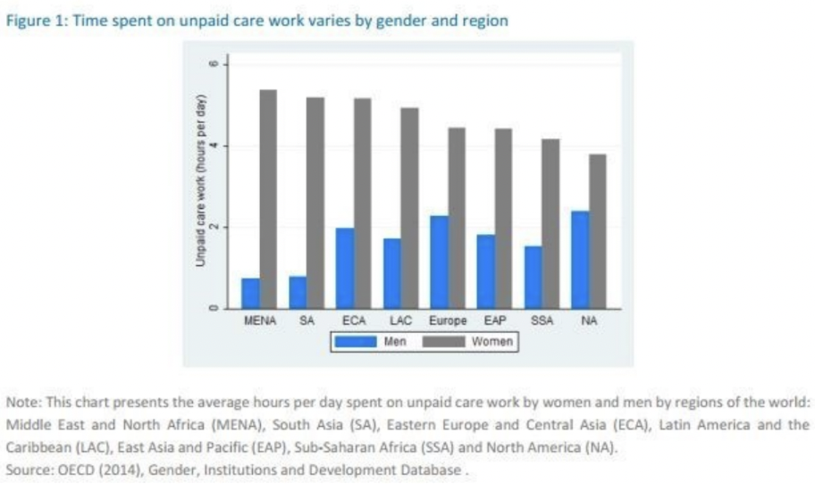

Economic thought
As you have learned, other models can be used to measure economic growth or well-being. As you explore some of the alternative indicators, consider the following questions. You will use one of them to focus a pitch on which indicator should be used. Record your pitch.
Select one of the following as your focus:
- What are the implications of what ‘counts’ and does ‘not count in GDP?
- What is the significance of counting paid domestic work but not unpaid housework or of not counting volunteer work in GDP?
- In what ways do alternative economic measures attempt to address the shortcomings of traditional economic indicators?
- Which are more practical or realistic – the traditional or alternative measures? Why?
Consider the following criteria in your pitch:
|
|
Checklist Items |
|
clear introduction |
|
|
2-3 arguments with evidence/data |
|
|
clarity of voice |
|
|
remember you are trying to convince your audience your choice is the best! |
1. Human Development Index (HDI)
The United Nations developed the Human Development Index (HDI) as a metric to assess countries' social and economic development levels. Four principal examination areas are used to rank countries: mean years of schooling, expected years of schooling, life expectancy at birth, and gross national income per capita. This index makes it possible to follow development level changes over time and compare the development levels of different countries.
HDI has played two key roles in the field of applied development economics:
as a tool to popularize human development as a new understanding of wellbeing, and
as an alternative to GDP per capita as a way to measure levels of development for comparison across both countries and time.
2. Genuine Progress Index (GPI)
The GPI is an indicator of sustainable development and well-being; it includes 26 variables related to economic, social, and environmental progress. Economic indicators include inequality and the cost of unemployment. Environmental indicators include the cost of water pollution, air pollution, climate change, wetlands depletion, forest cover change, and non-renewable energy resources. Social indicators include the value of housework, higher education, volunteer work, and the cost of commuting and crime.
Some US states, such as Maryland and Vermont, use this indicator.

3. Feminist Approaches
Another approach to measuring economic well-being takes a feminist approach. The ideas of economist Marilyn Waring have influenced this approach.
Read this article:
|
The way we measure economies is inherently sexist weforum.org/agenda/2016/04/why-economic-policy-overlooks-women  One headline indicator dominates public debate about the health or otherwise of the economy, and that is growth in Gross Domestic Product (GDP). It has become so familiar that few people appreciate that the creation and measurement of GDP rests on many assumptions and judgments. These include two key omissions: changes in environmental indicators; and unpaid work in the home and volunteering. Women do a majority of this unpaid work (on average in the OECD countries women do about twice as much, 150 minutes a day more, as men in the home). Because it is not measured, it is generally overlooked by economic policy. In a classic history of economic measurement published in 1958, Paul Studenski pointed out that over time, markets had developed for some household activities – such as restaurants for meals out – and that women moved into the paid workforce during wartime then out of it again afterward; hence, “The omission of unpaid services of housewives from national income computation distorts the picture.” He concluded that in principle, unpaid work in the home should be included in GDP, but there were practical difficulties in estimating the amount of work and its valuation. Given that there are practical difficulties in every aspect of gathering data to estimate GDP, it is hard to avoid the suspicion that in the end this just was not seen as a sufficiently important question because it “only” concerned women and housework. If women counted, GDP would look very different Needless to say, feminists have long argued that (mainly) women’s unpaid work should be part of what official economic statistics measure. One of the best-known contributions was Marilyn Waring’s 1988 book, If Women Counted. But mainstream economics never entirely lost sight of the issue either. In a well known alternative to GDP proposed in 1972 by William Nordhaus and James Tobin, the “Measure of Economic Welfare” (MEW), their estimate for the amount and value of “non-market production’ in the mid-1960s was equivalent to about 40% of conventionally measured economic output economy. More recently, statisticians have published occasional estimates. In a 2011 study, the OECD concluded that home production would add between 20% and 50% to the GDP of its member countries. The US Bureau of Economic Analysis said it would have added 26% to US GDP in 2010. For all that there have been several initiatives to measure and incorporate unpaid work in the home in the statistics for economic output, these have not had much traction in the policy debate. This might be changing, however, for two reasons. |
|
“The old barriers are breaking down” One is that the amount of one kind of unpaid voluntary work is on the increase and is clearly making a valuable economic contribution. That is the voluntary provision of free digital goods – not “free” online content in fact paid for by selling personal data to advertisers, but genuinely voluntary contributions. This includes widely used open source software such as Linux or R, volunteer-maintained initiatives like Wikipedia or Ushahidi, and the proliferation of interesting and entertaining blogs and videos. The increase in digital volunteering means there is an unmeasured contribution to valuable economic activity. More importantly, it blurs the clear boundary between “home” and “economy” assumed in the conventional definition of GDP. People who provide such content online might be doing some of it as part of a paid job, some as a hobby; or they might hope it will turn into paid work later, or provide some marketed services using the free content as a shop window. In any case, the old boundary is breaking down. The recent report on UK economic statistics by Sir Charles Bean pointed out that there are several ways the digital economy presents a challenge to conventional economic statistics, the “production boundary” question among them. It is more than ironic that men do a majority of this voluntary activity, in the male-dominated tech world, but the impetus it brings to measuring all unpaid work is still welcome. The second reason is that demographic trends in many countries (not all of them rich ones) mean the decision by women about whether to work unpaid at home or for pay is increasingly important for public policy. Who is going to care for the rapidly growing proportion of older people? We will end up working longer on average, and medical researchers are paying more attention to the health and vitality of people in their 60s and 70s; but even so the number of very elderly people who need care is going to rise rapidly. What are the policy options? Pay more – either through taxes to finance public provision or for private provision – to support these older people. Invest in domestic “capital” such as robots for cleaning or automated deliveries of meals. Or rely on unpaid caring from family members and friends, a majority of it likely to be provided by women. There needs to be a debate about which option or mix is desirable – and it should be informed by data. Until unpaid work in the home is measured properly, this important policy debate is going to take place in ignorance. “Distorted policies and perceptions” The renewed interest in measuring women’s (and men’s) unpaid contribution to economic activity is overdue – as is a parallel interest in measuring the unpaid contribution of nature to our current consumption. Economists have a high regard for markets, not only because they ensure supplies of goods and services are matched to demands in our complex globalised economies, but also because they reflect individuals’ own preferences and choices. However, the longstanding focus only on marketed activities through GDP has distorted perceptions and policies. As a rough guide to long run increases in prosperity, GDP growth has been a reasonable yardstick; but it is only a proxy for economic welfare. There is no good rationale for continuing to ignore other important components of economic well-being, including women’s unpaid work. Some countries have made a start in collecting at least occasionally the data needed to estimate an equal opportunity GDP, and the new technologies could make this easier. The time has come now to reopen the 1950s debate about how we should define the economy, and ensure that GDP or its replacement counts the vital work that goes on in the home, and in the community, as well as work in the market.
|
4. Happiness Indicators
A significant strand of economics research into quality of life seeks to understand the relationship between income and life satisfaction, and thereby to address one of life’s ultimate questions—does money make us happy? The simple question does not, always, lead to straightforward answers and we shall look at some of the relations between life satisfaction, income, age, employment, and the affluence of others that have featured in this field. A natural starting point for this work can be found in the work of Richard Easterlin who showed that throughout a decade of significant GDP growth, average levels of life satisfaction in the US population had remained relatively flat. One can argue that as income is unbounded, and life satisfaction was reasonably close to the top of the measurement scale at the start of the period, the result was not that surprising but it helps to raise questions about the reasons for pursuing income growth. If asked, most people would say they would be better off if their income were increased and yet—in terms of our experience of life—it seems it doesn’t actually push the needle over the long term.
~ Paul Anand (is an economist involved in helping governmental organizations move beyond GDP. )
Let's read this article:
|
How do you measure happiness? Jan 23, 2013
Paul Dolan and Oliver Harrison argue that the next set of development goals should take well-being into account. Eight Millennium Development Goals (MDGs) were established following the UN Millennium Summit in 2000. All 193 United Nations member states and at least 23 international organizations have agreed to achieve these goals by 2015. Regular progress reports have been published since 2004 and it looks likely that the initiative will be declared a “partial success” by its target year. But what will happen after 2015? Well, these goals have focused quite explicitly on objective indicators. They are considered, quite rightly, to be important determinants of a good life. But, ultimately, a good life has to be good for the individual. At some point, this requires inquiry into how people feel. There is significant evidence that happier people are healthier, more productive and more resilient to external shocks (for example, unemployment). In the wake of recent natural and man-made disasters, and unprecedented economic circumstances, there is new interest in strengthening the resilience of individuals, families, companies and nations to such external shocks. |
|
Why do some people cope better with change than others (likewise families, companies or nations)? Because of the close link between happiness and resilience a better understanding of the drivers of happiness is a critical foundation for such work. Fortunately, there have been enormous advances in the measurement of human well-being over the last couple of decades and we are now confident that we have measures that are reliable and sensitive to important changes. Modern measures of human well-being assess both how we feel on a day-to-day basis and how we think about life in an overall sense. Ideally, we should seek to measure well-being in different ways, as carefully selected approaches are complementary for research and building effective interventions. In parallel to measuring human well-being, other objective indicators (for example, educational attainment, wealth and access to healthcare) would continue to be strengthened. These measures would be correlated with human well-being as potential drivers (that go part of the way towards explaining well-being measurements). In this way, we would be able to able to determine the “happiness impact” of a range of indicators and thus policy objectives, allowing for a more joined-up approach to decision-making at all levels. Over time, data would be collected to allow us to describe the correlations and causal relationships between objective measurements, human well-being and resilience. This will be a powerful toolkit. Of course, many will remain concerned with specific objective outcomes in their own right. Of course, the aetiological model and regression analysis could also be reversed to assess the impact of human well-being as a determinant of existing outcomes (which we know it is). Well-being indicators have been shown to be highly predictive of health, productivity and many of the other good things policy-makers and citizens care about. Happiness is also contagious and we should do all we can to spread it. There is a further compelling reason for including well-being measures in the next round of the MDGs. It appears likely that economic growth will continue to be patchy worldwide, with some countries experiencing relative falls in their ranking of national GDP across the world while others gain. Countries with falling GDP (Greece has been a recent example) might explicitly sharpen their focus on minimizing any negative impact on human well-being during falls in GDP, while countries gaining in GDP might focus on ensuring that it rises (or at least maintained) in the context of greater economic wealth. We are not alone in thinking that the time has come for the systematic measurement of human well-being. The OECD is making serious attempts to measure well-being, the United Kingdom is already monitoring national happiness and the US is likely to follow suit in due course. A commitment to improving the state of the world (and strengthening resilience) requires a commitment to improving subjective well-being. Join us in our endeavour to measure and value it. Authors: Paul Dolan, Professor of Behavioural Science, Department of Social Policy, London School of Economics. Oliver Harrison, Director of Strategy, Health Authority, Abu Dhabi Image: A man walks past shop-front shutters painted with the word happy in London REUTERS/Andrew Winning |
Let's read this article:
|
Which are the happiest countries in the world? Norway 1st, Canada 7th By Seth Borenstein The Associated Press
WASHINGTON – If you want to go to your happy place, you need more than cash. A winter coat helps – and a sense of community. A new report shows Norway is the happiest country on Earth, Americans are getting sadder, and it takes more than just money to be happy. Norway vaulted to the top slot in the World Happiness Report despite the plummeting price of oil, a key part of its economy. Income in the United States has gone up over the past decade, but happiness is declining. The United States was 14th in the latest ranking, down from No. 13 last year, and over the years Americans steadily have been rating themselves less happy. “It’s the human things that matter. If the riches make it harder to have frequent and trustworthy relationship between people, is it worth it?” asked John Helliwell, the lead author of the report and an economist at the University of British Columbia in Canada (ranked No. 7). “The material can stand in the way of the human.” Studying happiness may seem frivolous, but serious academics have long been calling for more testing about people’s emotional well-being, especially in the United States. In 2013, the National Academy of Sciences issued a report recommending that federal statistics and surveys, which normally deal with income, spending, health and housing, include a few extra questions on happiness because it would lead to better policy that affects people’s lives. Norway moved from No. 4 to the top spot in the report’s rankings, which combine economic, health and polling data compiled by economists that are averaged over three years from 2014 to 2016. Norway edged past previous champ Denmark, which fell to second. Iceland, Switzerland and Finland round out the top 5. |
|
“Good for them. I don’t think Denmark has a monopoly on happiness,” said Meik Wiking, chief executive officer of the Happiness Research Institute in Copenhagen, who wasn’t part of the global scientific study that came out with the rankings. “What works in the Nordic countries is a sense of community and understanding in the common good,” Wiking said. Still, you have to have some money to be happy, which is why most of the bottom countries are in desperate poverty. But at a certain point extra money doesn’t buy extra happiness, Helliwell and others said. Central African Republic fell to last on the happiness list, and is joined at the bottom by Burundi, Tanzania, Syria and Rwanda. The report ranks 155 countries. The economists have been ranking countries since 2012, but the data used goes back farther so the economists can judge trends. The rankings are based on gross domestic product per person, healthy life expectancy with four factors from global surveys. In those surveys, people give scores from 1 to 10 on how much social support they feel they have if something goes wrong, their freedom to make their own life choices, their sense of how corrupt their society is and how generous they are. While most countries were either getting happier or at least treading water, America’s happiness score dropped 5 per cent over the past decade. Venezuela and the Central African Republic slipped the most over the past decade. Nicaragua and Latvia increased the most. Study co-author and economist Jeffrey Sachs of Columbia University said in a phone interview from Oslo that the sense of community, so strong in Norway, is deteriorating in the United States. “We’re becoming more and more mean spirited. And our government is becoming more and more corrupt. And inequality is rising,” Sachs said, citing research and analysis he conducted on America’s declining happiness for the report. “It’s a long-term trend and conditions are getting worse.” University of Maryland’s Carol Graham, who wasn’t a study author but did review some chapters, said the report mimics what she sees in the American rural areas, where her research shows poor whites have a deeper lack of hope, which she connects to rises in addictions to painkillers and suicide among that group. “There is deep misery in the heartland,” Graham, author of the book “The Pursuit of Happiness,” wrote in an email. Happiness – and doing what you love – is more important than politicians think, said study author Helliwell. He rated his personal happiness a 9 on a 1-to-10 scale. |
There are many different indicators that can be used to measure economic growth and wellbeing.
The Infographic that follows provides a summary.